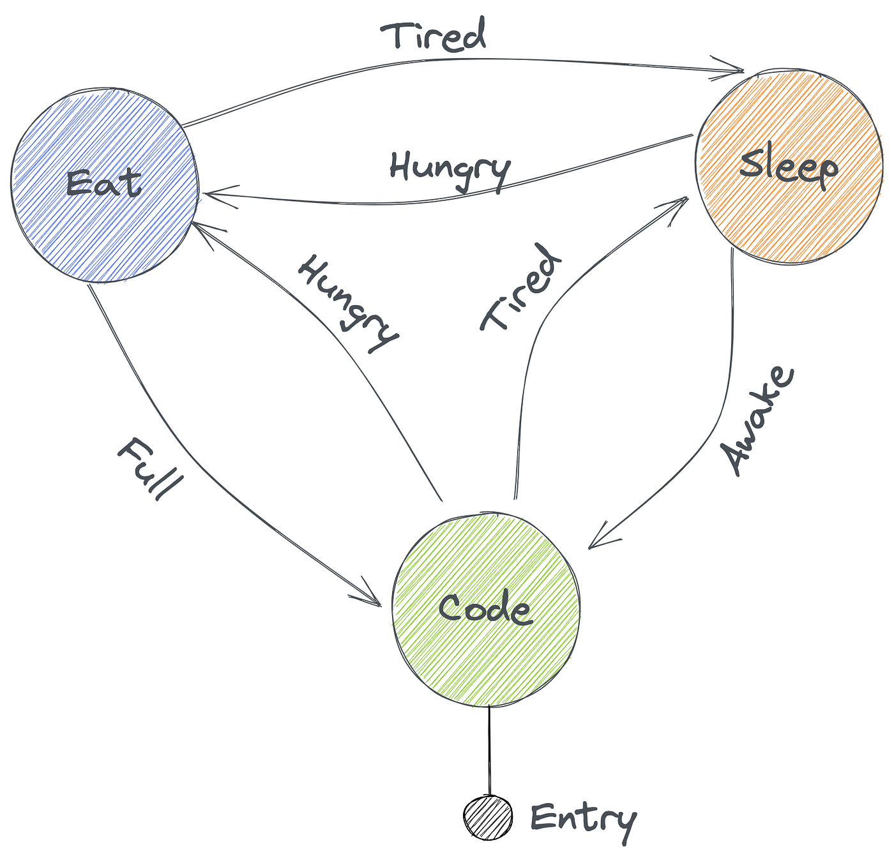

uBoat Stakeholder Needs
1. Concept of Operations
This section contains system operations.
1.1. Mission Profiles & Phases
The system shall ensure autonomous recovery to the surface in the event of mission-critical anomalies or communication loss.

1.2. Operational Environment
This section contains system operations.
1.3. Stakeholders & Operator Roles
This section contains system operations.
2. Operational Capability Needs
This section contains system operations.
2.1. Primary Mission Capabilities (KPP / MOE)
This section contains system operations.
2.2. Autonomy & Human-Machine Interaction
This section contains system operations.
2.3. Endurance, Range & Navigation Needs
This section contains system operations.
2.4. Payload & Data Collection Needs
This section contains system operations.
3. Safety, Survivability & Compliance Needs
This section contains system operations.
3.1. Mission Safety & Emergency Recovery
This section contains system operations.
3.2. Security & Communication Resilience
This section contains system operations.
3.3. Regulatory & Certification Constraints
This section contains system operations.